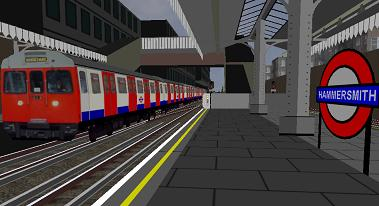
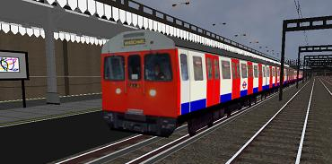

This is the rebuild of the hammersmith and city line. Works on bve2, bve4 and Openbve


This route uses the train C stock (the C stock from trainsimcentral works best)
To get the outside train object download the C stock from trainsimcentral, then download the outside objects at https://mm2rmbuses.googlepages.com/LT_C69_77_v2_ext_view.rar, then copy the files into the C stock's folder.
CLICK HERE TO DOWNLOAD
CLICK HERE TO SEE WHAT ELSE I HAVE MADE FOR BVE
CONTACT ME
you can contact me on youtube - CLICK HERE
ALL OF THESE BVE ROUTES AND BVE TRAINS ARE MY COPYRIGHT. THESE BVE ROUTES AND BVE TRAINS CANNOT BE PUT ON OTHER WEBSITES OR BE ALTERED AND PUT ON OTHER WEBSITES